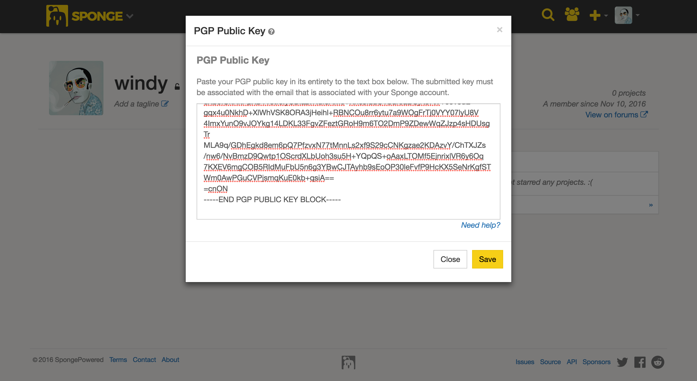

Menerbitkan pengisian anda¶
Sponge's plugin resmi / moda repositori, Ore, adalah suatu projek gratis open-source yang mana semua orang boleh mempublikasikan Sponge plugin mereka atau menambahkan moda pada.
Kemasan plugin anda¶
Ore requires any projects to be packaged with a mcmod.info descriptor file in the top-level of your JAR file. This
file is used to automatically infer some important details about your project to make the upload process easier. Ore
will reject your plugin if this file is missing from the JAR. Luckily, SpongeAPI has a built-in annotation processor
that creates this file for you automatically, on compile, using the @Plugin annotation that you have likely
already created in your plugin's main class.
Catatan
Untuk informasi lebih lanjut tentang cara membuat dan menyusun pertama anda plugin, lihat /plugin/plugin-kelas
Untuk acuan, ini adalah contoh mcmod.info file:
[
{
"modid": "my-plugin",
"name": "MyPlugin",
"version": "1.0.0",
"description": "My first plugin!",
"url": "https://spongepowered.org",
"authorList": [
"windy",
"Zidane",
"gabizou"
],
"requiredMods": [
"bookotd@1.0.0",
"ore-test@1.0.0",
"worldedit@1.0.0"
],
"dependencies": [
"bookotd@1.0.0",
"ore-test@1.0.0",
"worldedit@1.0.0"
]
}
]
Pada bagian akhir, setiap projek Ore harus memilik modid, nama dan, versi bidang yang dilengkapi.
Menandatangani plugin anda¶
Karena masalah kemanan, Ore membutuhkan setiap file plugin (ZIP atau JAR) untuk di unggah terpisah dengan 'Pretty Good Privacy' (PGP)<https://en.wikipedia.org/wiki/Pretty_Good_Privacy>`__ tanda tangan untuk kunci publik yang terkait dengan email yang kamu daftarkan pada Sponge. Dengan tandatangan digital memastikan bahwa setiap file yang diunggah oleh pengguna dimaksudkan untuk diunggah oleh pemegang akun yang sebenarnya.
Catatan
Digital mengesahkan tanda tangan dan cap dokumen. Jika dokumen tersebut kemudian dimodifikasi dengan cara apapun, verifikasi tanda tangan akan gagal. Tanda tangan digital dapat melayani tujuan yang sama sebagai tulisan tangan tanda tangan dengan tambahan keuntungan yang tamper-resistant. Yang GnuPG distribusi sumber, misalnya, ditandatangani sehingga pengguna dapat memverifikasi bahwa kode sumber yang belum diubah sejak itu dikemas.
Untuk tanda plugin anda, pertama anda harus mengunduh PGP yang kompatibel dengan program perangkat lunak. seperti 'GnuGP (GPG) <https://www.gnupg.org/> '_. GPG adalah aplikasi yang tersedia untuk semua platform utama dan binari yang dapat diunduh 'di sini <https://www.gnupg.org/download/index.html#sec-1-2> '_.
Setelah anda menginstal GPG dan telah menghasilkan kunci publik pertama anda, anda perlu menambahkan kunci ke akun anda. untuk melakukan ini, anda dapat menavigasi ke profil anda dan tekan dimbol kunci di sebelah avatar anda.

You will then be prompted to enter your key into a text box. You must be sure to enter the key in its entirety or signature validation will fail.
Akhirnya, anda harus menandatangani dibangun plugin dengan anda swasta kunci dari kunci publik yang anda upload. Anda hanya perlu sign file yang anda upload: misalnya, jika anda meng-upload ZIP dengan plugin JAR disertakan, hanya ZIP perlu (dan harus) ditandatangani. Cara termudah untuk menandatangani berkas anda berniat untuk meng-upload adalah dengan mengikuti perintah GPG.
gpg --output myplugin-1.0.0.jar.sig --detach-sig myplugin-1.0.0.jar
Catatan
If you're using a build manager such as Gradle or Maven, there are plugins you can apply to your build script that can sign built artifacts and automate this laborious process for you. For more information, please refer to Gradle's documentation or Maven's documentation.
Mengunggah pengisian anda¶
Setelah berkas plugin JAR anda dipaket dengan sebuah file deskriptor ' 'mcmod.info ' ' di bagian tingkat atas dan ditandatangani dengan kunci privat PGP anda, plugin anda siap untuk diunggah! Untuk membuat suatu proyek pada Ore, anda harus mempunya akun Sponge aktif. Menekan tombol "Mendaftar" di bagian atas sudut bawah akan membawa anda ke halaman yang sesuai untuk membuat satu. Jika anda sudah memiliki akun, Tekan saja "Masuk" di bagian atas tombol sudut kanan bawah untuk masuk ke Ore.
Setelah masuk, Arahkan ke avatar anda dan pilih opsi "baru" dalam menu tarik yang muncul, atau tekan saja tombol "C".
Saat mengupload, wizard pembuatan pertama-tama akan meminta file upload utama Anda dan kemudian untuk tanda tangan terpisah Anda.
Menyiapkan Proyek Anda di Bijih¶
Setelah mengunggah plugin Anda, kamu akan diberi beberapa pengaturan untuk mengonfigurasi proyek Anda sesuka Anda. Jangan khawatir, semua ini bisa diganti nanti di panel setting. Setelah menyiapkan proyek Anda, kamu dapat mengundang pengguna Sponge untuk menjadi bagian dari proyek Anda. Setiap pengguna yang terdaftar di forum dapat diundang ke sebuah proyek bahkan jika mereka tidak pernah masuk ke Ore. Setelah membuat proyek Anda, pengguna yang Anda undang akan menerima pemberitahuan dan akan dapat menerima atau menolak undangan Anda. Anggota proyek tidak akan terlihat oleh publik sampai undangan diterima.
Saat ini terdapat tiga kelompok yang dapat anda tetapkan untuk anggota proyek: 'Developer ', "Editor', dan 'Dukungan'. Proyek yang dibuat pengguna akan diberikan 'Pemilik' yang telah memiliki akses untuk proyek. Disini adalah jalannya cepat dari apa yang masing-masing grup dapat melakukan dalam proyek anda.
Pemilik¶
Ada maksimum satu pemilik untuk sebuah proyek, tidak dapat dipindahtangankan (untuk saat ini), dan merupakan satu-satunya kelompok yang dapat menetapkan peran kepada anggota lainnya.
Para pengembang¶
Pengembang dapat membuat/mengedit saluran rilis, halaman dan membuat/sunting versi.
Penyunting¶
Editor bisa mengedit halaman.
Dukungan¶
Dukungan tidak melakukan apa-apa, hanya sebuah cara untuk menunjukkan bahwa anggota adalah bagian dari proyek.
Documenting Your Project With Pages¶
To document your plugin Ore offers the creation of pages. By default, you get a 'Home' page when you create your new Project. To add new pages, you can click on the '+' icon in the Pages bar on the right of the screen; doing so will open a pop-up where you can choose a name and the parent page (adding a page on the Home page is not possible). If you choose the '<None>' option the page will become a root page where you can later add child pages on. If you choose to add it to another page the page will only show when the parent page is expanded. To document your pages, you can use CommonMark.
Linking Pages¶
If you have the following tree structure in your pages:
- Home
- Perintah
- Pengguna
- Admin
- Pengaturan
- Config
- Hak akses
And you want to add a link from the home page to the Config page in Setup you can use WikiLinks. To add a WikiLink use the format [[Link]] so on the home page you can add [[Setup/Config]] and this will get be converted to a link that is guaranteed to work.
Catatan
You can also specify a title for the link and separate it with a Pipe symbol so [[Title|Link]] will become a link with the title
Catatan
WikiLinks are only supported in Ore so if you use them on the Home-page they will not be displayed correctly on the forums. However, we still recommend using WikiLinks instead of normal links to guarantee the future working of your wiki.
Project States¶
When creating a new project, a banner will appear telling you your project is in a 'new' state. The new state is intended to indicated to users and admins you are still working on the setup of your project. If you have finished documenting your plugin to make it comply with the guidelines, click the 'publish' button to complete the process. However, if you don't publish it yourself then the project will be published automatically 24 hours after its creation.
Needs Changes¶
Ore staff can hide your project and request changes; the changes in question will be listed in the banner. This state will hide your project from the public; if you are done you can send your project for approval.
Needs Approval¶
In this state your project is still hidden from the public while waiting for a staff member to review and validate the changes that were requested. Please be patient, the staff members might be busy with other tasks. If the project gets approved it will automatically become visible again. Please make sure to actually fix the points that require changes.